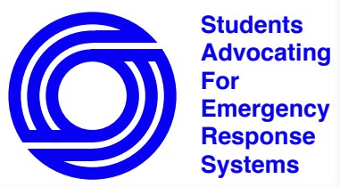
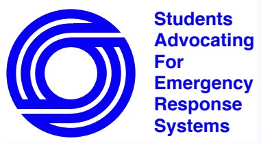
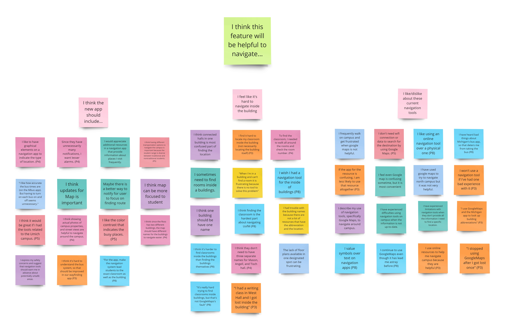
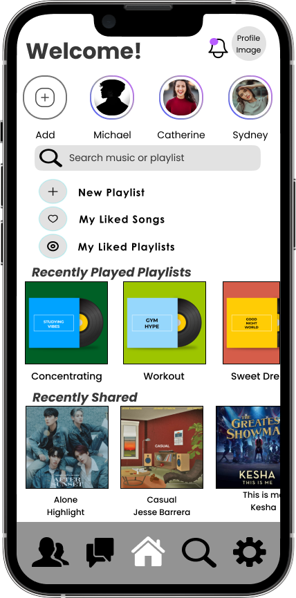
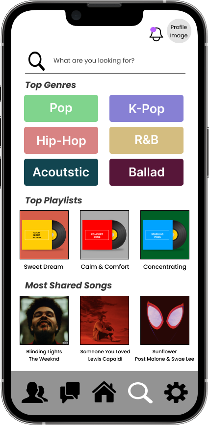
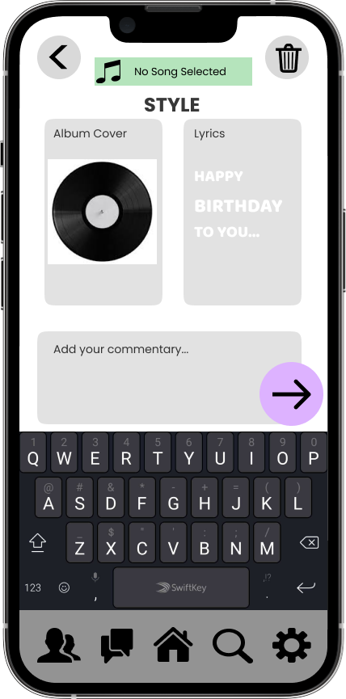
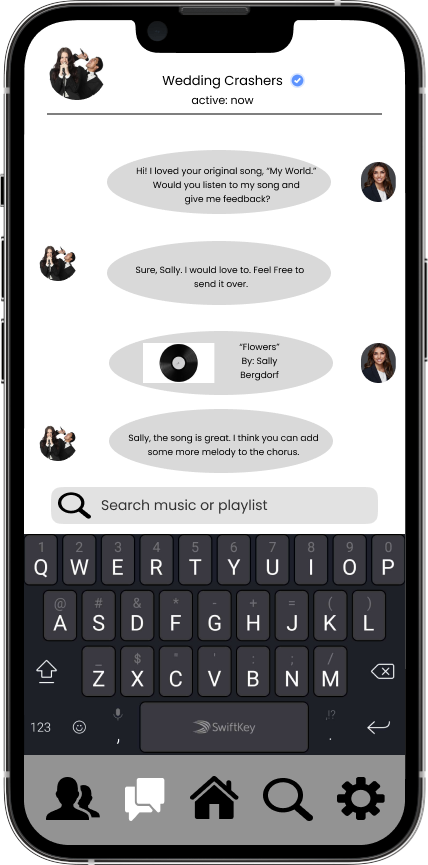

Haewon Park's Portfolio
Hi, I'm Haewon!
I'm a student studying information and entrepreneurship. I'm passionate about improving the accessibility of products through design for all of users.
My Projects
Please click each project to see the details of it!
-
Urban Change-Making Proposal
I wrote a proposal for implementations that might be helpful to revive the Cheongdo, small county in South Korea. I defined challenges, key stakeholders, and suggested solutions.
-
Urban UX Design
 

My team works to promote the accessibility of the Univeristy of Michigan's emergency call system. Our goal was to prototype the interface of data collecting application to highlight the need for the Emergency Blue Light Phone system to be replaced with newer, more modern, and more accessible devices.
-
Student Life UX Research
This project is for needs assessment and usability evaluation. My team tried to understand the biggest challenges that students face in finding what they need on campus to create a new wayfinding tool.
-
New Online Community Design
   My team prototype a new social media app for music sharing called 'SoundShare'. Our app is designed to be user-friendly and intuitive, making it easy for everyone to create and share their music clips.